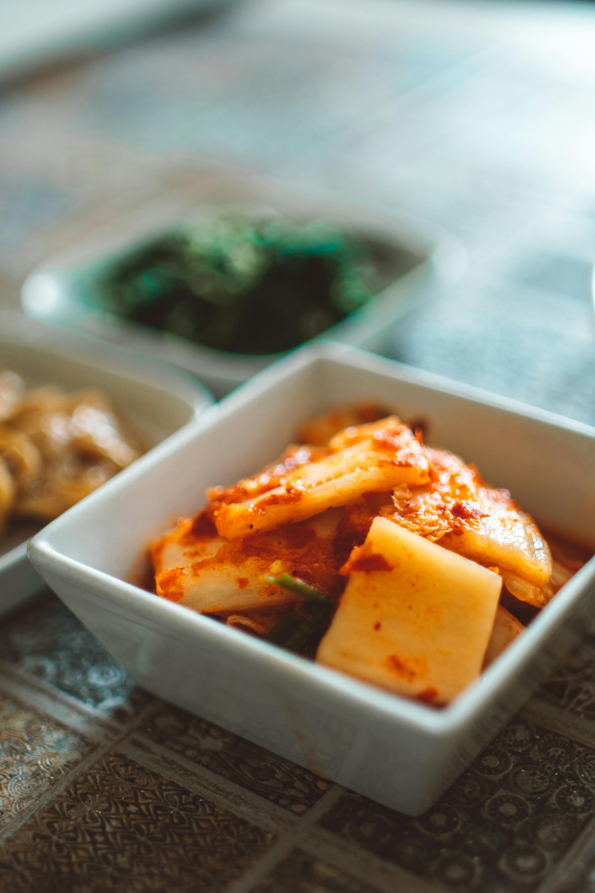

Ingredients
- Napa cabbage
- Korean red pepper flakes
- Garlic
- Ginger
- Fish sauce
- Green onions
- Korean radish
- Salt
Instructions
- Salt cabbage
- Make pepper paste
- Mix vegetables
- Combine all ingredients
- Ferment for 1-5 days
Preparation Time: 2 hours
Fermentation: 1-5 days
Difficulty: Advanced